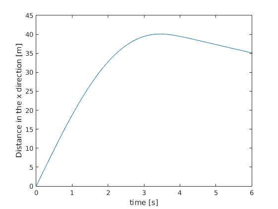
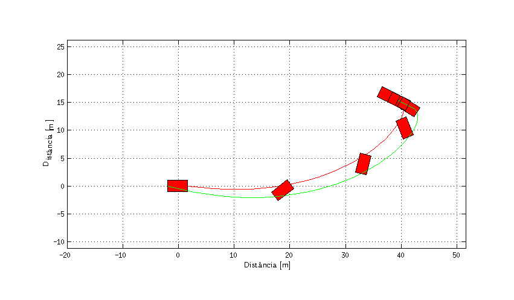
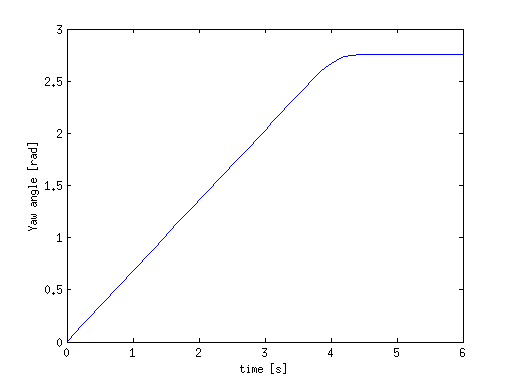
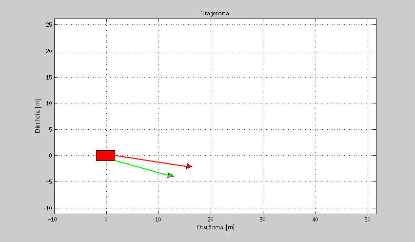

Template simples
Exemplo de script para simula��o de ve�culo simples, sem articula��o.
Contents
Code start
clear all % Clear workspace close all % Closing figures clc % Clear command window import VehicleDynamics.* % Import package Dinamica Veicular
Integration parameters
% Simulation time T = 6; % Total simulation time [s] resol = 50; % Resolution TSPAN = 0:T/resol:T; % Time span [s] % Initial conditions dPSI0 = 0.7; % Initial yaw rate [rad/s] ALPHAT0 = -0.2; % Initial side slip angle [rad] PSI0 = 0; % Initial yaw angle [rad] X0 = 0; % Initial CG horizontal position [m] Y0 = 0; % Initial CG vertical position [m] V0 = 20; % Initial CG velocity [m/s] x0 = [dPSI0 ALPHAT0 PSI0 X0 Y0 V0];
Tire parameters
Pneu escolhido: TirePacejka1989.m.
a0 = 1.002806; a1 = 2.014156; a2 = 710.5013; a3 = 5226.341; a4 = 78.87699; a5 = 0.01078379; a6 = -0.004759443; a7 = 0.6704447; a8 = 0; a9 = 0; a10 = 0; a11 = 0; a12 = 0; a13 = 0; TireData = [a0 a1 a2 a3 a4 a5 a6 a7 a8 a9 a10 a11 a12 a13]; TireModel = VehicleDynamics.TirePacejka1989(TireData);
Vehicle parameters
Ve�culo escolhido: VeiculoSimplesNaoLinear3GDL.m.
mF0 = 700; % Massa sobre o eixo dianteiro [kg] mR0 = 600; % Massa sobre o eixo traseiro [kg] IT = 10000; % Momento de in�rcia [kg*m2] DELTA = 0; % Ester�amento do eixo dianteiro [rad] lT = 3.550; % Dist�ncia entre os eixos[m] nF = 2; % N�mero de pneus no eixo dianteiro nR = 2; % N�mero de pneus no eixo traseiro largT = 2; % Largura [m] muy = 0.8; % Coeficiente de atrito de opera��o VehicleData = [mF0 mR0 IT DELTA lT nF nR largT muy]; System = VehicleDynamics.VehicleSimpleNonlinear3DOF(VehicleData,TireModel);
Integration
[TOUT,XOUT] = ode45(@(t, estados) System.Model(t, estados),TSPAN,x0);
Post integration
% Retrieving states dPSI = XOUT(:,1); % Yaw rate [rad/s] ALPHAT = XOUT(:,2); % Side slip angle [rad] PSI = XOUT(:,3); % Yaw angle [rad] XT = XOUT(:,4); % CG horizontal position [m] YT = XOUT(:,5); % CG vertical position [m] VEL = XOUT(:,6); % CG velocity [m/s]
Results
Details: Graficos.m
G = VehicleDynamics.Graphics(System); f1 = figure(1); set(f1,'Units','centimeters') set(f1,'Position',[5 0 16 16]) set(f1,'PaperUnits','centimeters') set(f1,'PaperPosition',[0 0 16 16]) PaperPos = get(f1,'PaperPosition'); set(f1,'PaperSize',PaperPos(3:4)) % Subplot grid ax1 = subplot(2,2,1); ax2 = subplot(2,2,2); ax3 = subplot(2,2,3); ax4 = subplot(2,2,4); % Subplot (1) set(ax1,'NextPlot','add','Box','on','XGrid','on','YGrid','on') plot(ax1,TOUT,dPSI,'r') xlabel(ax1,'$t$ [s]','Interpreter','Latex') ylabel(ax1,'$\dot{\psi}$ [rad/s]','Interpreter','Latex') title(ax1,'$\dot{\psi}$ x $t$','Interpreter','Latex') % Subplot (2) set(ax2,'NextPlot','add','Box','on','XGrid','on','YGrid','on') plot(ax2,TOUT,ALPHAT,'r') xlabel(ax2,'$t$ [s]','Interpreter','Latex') ylabel(ax2,'$\alpha_T$ [rad]','Interpreter','Latex') title(ax2,'$\alpha_T$ x $t$','Interpreter','Latex') % Subplot (3) set(ax3,'NextPlot','add','Box','on','XGrid','on','YGrid','on') plot(ax3,TOUT,PSI,'r') xlabel(ax3,'$t$ [s]','Interpreter','Latex') ylabel(ax3,'$\psi$ [rad]','Interpreter','Latex') title(ax3,'$\psi$ x $t$','Interpreter','Latex') % Subplot (4) set(ax4,'NextPlot','add','Box','on','XGrid','on','YGrid','on') plot(ax4,TOUT,VEL,'r') xlabel(ax4,'$t$ [s]','Interpreter','Latex') ylabel(ax4,'$v$ [m/s]','Interpreter','Latex') title(ax4,'$v$ x $t$','Interpreter','Latex')
Results
Trajectory
G.Frame([XT YT PSI dPSI VEL ALPHAT],TOUT,0);
Animation
G.Animation([XT YT PSI dPSI VEL ALPHAT],TOUT,0);
